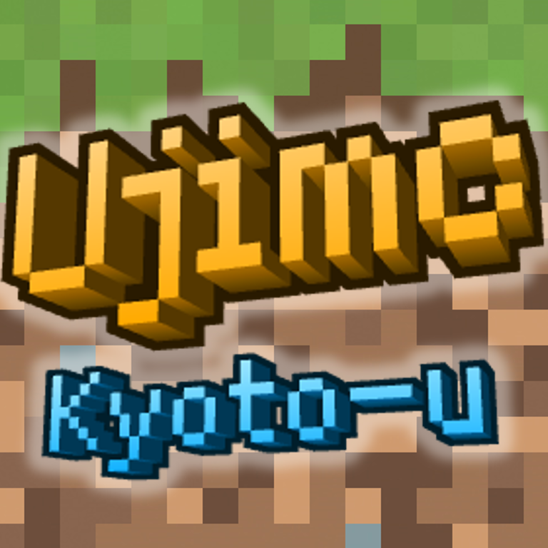
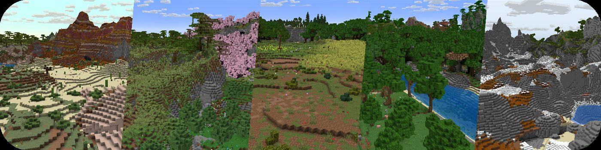
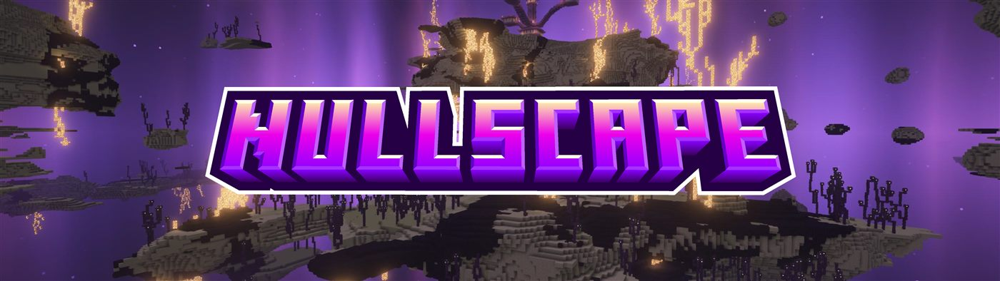

Java / Bedrock
play.ujimc.cc.cd

UJIMCJava・Bedrock クロスプレイ対応
宇治キャンパス発、学内外のプレイヤーが集まる自由なサバイバルサーバー。
コミュニティ参加
Connection
Java 版と Bedrock 版のどちらでも参加できます。バージョンは自由、推奨は Java 26.1.2 です。
play.ujimc.cc.cd
中国大陆地区有专用线路，请加QQ群了解或者是询问管理人员。
1 / 3
クリック、下へスワイプ、または戻る操作で閉じます。
Guest
サーバーの雰囲気を確認したい場合は、見学用アカウントでログインできます。通常の参加はホワイトリスト申請後にお願いします。
ujimc_guest
ujimc
Worlds
主世界、ネザー、エンドのすべてに専用のワールド生成を導入。いつものサバイバルに、探索する楽しさをもう一度加えています。

自然な地形と大きな景観を持つ、拠点づくりと長期開拓の中心。
危険なバイオームと構造物が広がる、緊張感のあるネザー。

虚空に浮かぶ異質な地形を旅する、静かで壮大なエンド。
Features
純粋なサバイバルの手触りを残しつつ、キャンパス発のコミュニティとして遊びやすさと自由度を整えています。
Contact
ホワイトリスト申請、接続、見学アカウントについての質問はこちらへ。